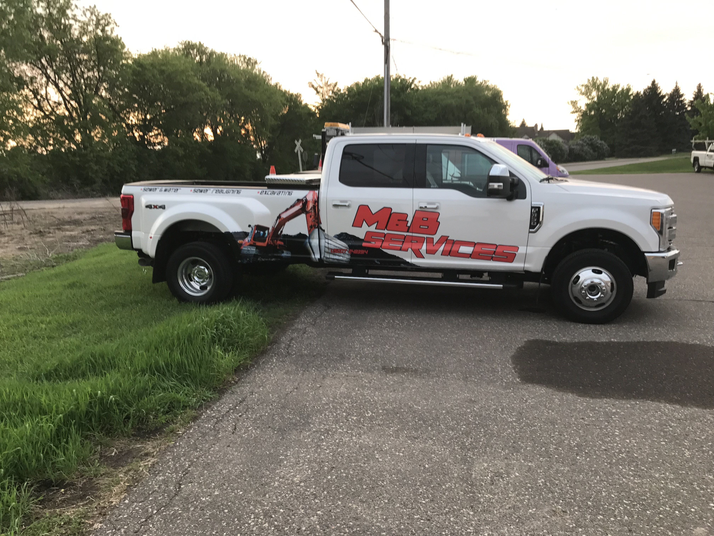
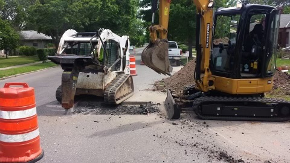

M&B Services was founded by Mike Boston and Jim Boston in 2014. Alongside our subsidiary, Boston Trucking, our team of utility specialists have over twenty years of experience in sewer, water, and excavation services.
We are a local, family-owned and operated company. We're committed to excellence and always have an owner/operator on site for every job. We do every part of the job ourselves—without subcontractors—so we can guarantee the quality of our work. You can trust M&B Services for all your sewer and water needs.

